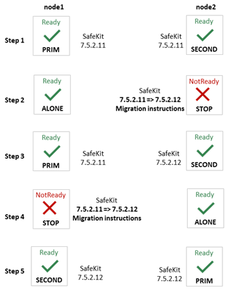
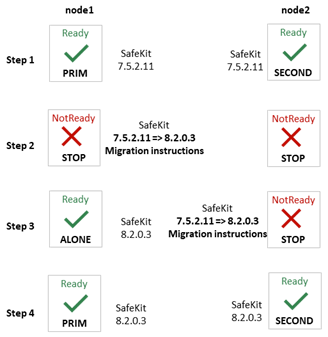
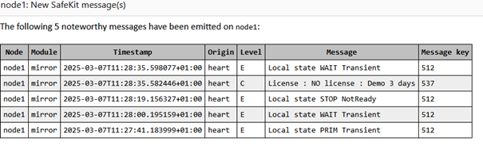
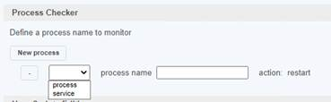
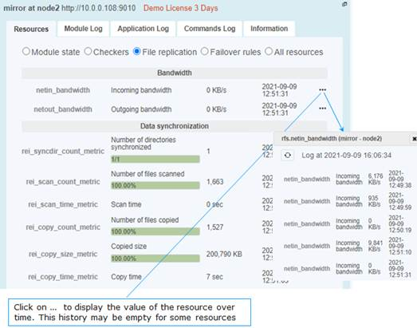
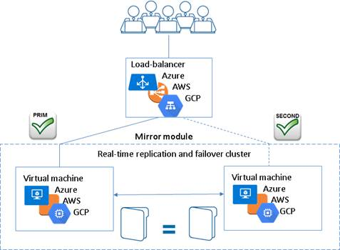
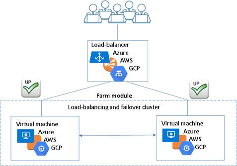

1. Before starting
 Section 1.1 “Supported operating systems”
Section 1.1 “Supported operating systems”
 Section 1.2 “SafeKit cluster upgrade”
Section 1.2 “SafeKit cluster upgrade”
 Section 1.3 “Documentation”
Section 1.3 “Documentation”
This document describes the latest releases of SafeKit. We encourage users of all previous releases to upgrade to the latest release when it is possible.
1.1 Supported operating systems
SafeKit 8.2.6 is available for operating system listed below.
The up-to-date list of supported operating systems can be found in the Software Release Bulletin and at Supported version.
1.1.1 Windows
|
· Windows Server 2025 (Intel x86 64-bit kernel) · Windows Server 2022 (Intel x86 64-bit kernel) · Windows Server 2019 (Intel x86 64-bit kernel) · Windows 11 Enterprise (Intel x86 64-bit kernel) · Windows 11 Pro (Intel x86 64-bit kernel) |
Two packages are downloadable: · a Windows Installer package (safekit_windows_x86_64_8_x_y_z.msi) It depends on the VS2022 C runtime which must be previously installed. · a standalone executable bundle (safekit_windows_x86_64_8_x_y_z.exe) It includes the SafeKit package and the VS2022 C runtime. |
1.1.2 Linux
|
· Red Hat Enterprise Linux 10 (Intel x86 64-bit kernel) · Red Hat Enterprise Linux 9 (Intel x86 64-bit kernel) · Red Hat Enterprise Linux 8 (Intel x86 64-bit kernel) |
In Red Hat, the following packages are required: · for SafeKit core libxml2 >= 2.9 , libxslt >= 1.1, libcurl >= 7.60,curl >= 7.60, libcrypto.so.1.1()(64bit),libssl.so.1.1()(64bit), libacl >= 2.2 , libattr >= 2.4 , libcap >= 2.48 , readline >= 7.0, binutils >= 2.30 ,coreutils >= 8.30,procps-ng, gawk,sed,nfs-utils,iproute,bind-utils,cronie, zip,unzip, nss-tools,mokutil,pesign,openssl, httpd >= 2.4.37,mod_auth_openidc,mod_ldap,mod_session,mod_ssl, policycoreutils,policycoreutils-python-utils for RH 8: lua >= 5.3, lua-libs >= 5.3 for RH > 8: mod_lua, lua >= 5.4, lua-libs >= 5.4 · for SafeKit file replication nfs-utils · for SafeKit load balancing: gcc, elfutils-libelf-devel, kernel-devel, make (see SK-0107) During SafeKit install, missing packages for the SafeKit core will be automatically installed via yum command. |
|
· Ubuntu 24.04 (Intel x86 64-bit kernel) |
In Ubuntu, the following packages are required: · for SafeKit core linux-image-generic
(>= 4.18) , libc6 (>= 2.30) , libxml2 (>= 2.9) , libxslt1.1 ,
libcurl4 (>= 7.60), curl (>= 7.60) , libssl3 , libacl1 (>= 2.2),
libattr1 · for SafeKit file replication nfs-common · for SafeKit load balancing: linux-headers, make, gcc (the same version as the one used to compile the kernel) During SafeKit install, missing packages for the SafeKit core will be automatically installed via apt command. |
1.2 SafeKit cluster upgrade
You may upgrade SafeKit to fix resolved issues or take advantage of new features.
Before upgrading:
- check the list of fixes into the Software Release Bulletin
- read this Release Notes to learn about the new features and migration instructions
- if possible, select the latest SafeKit package released
As SafeKit is installed on at least two nodes, you must take certain precautions when upgrading them to limit service unavailability while respecting version compatibility constraints. These differ according to whether the upgrade is a minor or a major one. Migration instructions in section 4 details the procedure to upgrade SafeKit from a version to the next one and specifies whether it is a minor or major upgrade.
1.2.1 Minor upgrade
An upgrade is minor when the installed SafeKit package and the new one are compatible in terms of communications and internal components. Usually, only the last version number changes. For instance, upgrading from 7.5.2.11 to 7.5.2.12 is a minor upgrade. In this case, the order in which nodes are upgraded can be as described below.
If the automatic startup at boot of the module is enabled, disable it on all nodes before the upgrade (with the SafeKit command line or the web console). This prevents the module from starting in the middle of the upgrade procedure if it causes a reboot. Once the upgrade procedure is complete, automatic startup at boot can be re-enabled.
|
 |
The upgrade procedure on the node itself is usually the standard one described in the SafeKit upgrade section of the SafeKit User’s Guide. Anyway, always check for Migration instructions in section 4 for details depending on your SafeKit release.
At step 3 (and 4), check that the module (and the application) is operational on node2 before upgrading node1. If not, do not migrate node1 and on node2, roll back to the previous version:
|
1.2.2 Major upgrade
An upgrade is major when the installed SafeKit package and the new one are not compatible in terms of communications or internal components. For instance, upgrading from 7.5.2.12 to 8.2.0.3 is a major upgrade. In this case, the upgrade may require applying specific migration instructions before being operational. The order in which nodes are upgraded must be as described below.
If the automatic startup at boot of the module is enabled, disable it on all nodes before the upgrade (with the SafeKit command line or the web console). This prevents the module from starting in the middle of the upgrade procedure if it causes a reboot. Once the upgrade procedure is complete, automatic startup at boot can be re-enabled.
|
 |
The upgrade procedure on the node itself may not be the standard one. Refer Migration instructions section in section 4 for details depending on your SafeKit release. Note that it is safe to apply this upgrade order also for minor upgrades.
At step 3, check that the module (and the application) is operational on node1 before upgrading node2. If not, do not migrate node2 and node1, roll back to the previous version:
|
1.3 Documentation
The latest version of the SafeKit 8.2 documentation can be found at Documentation – SafeKit 8.2.
|
SafeKit Solution |
SafeKit solution is fully detailed on the marketing site |
||
|
SafeKit Release Notes |
It describes new features of major SafeKit releases and provides migration instructions. |
||
|
Technical release bulletin for all SafeKit 8.2 packages with the description of changes and problems that are fixed. |
|||
|
List of known problems and restrictions on SafeKit |
|||
|
SafeKit User’s Guide (english version) Guide de l’utilisateur SafeKit (french version) |
It covers all phases of SafeKit implementation: architecture, initial use, installation, configuration, administration, troubleshooting, testing and support.
|
||
|
SafeKit Training (english version) |
Refer to this online training for a quick start in using SafeKit. |
2. Major changes
 Section 2.1 Major changes between SafeKit 8.2 and SafeKit 7.5
Section 2.1 Major changes between SafeKit 8.2 and SafeKit 7.5
 Section 2.2 Major changes between SafeKit 7.5.2 and SafeKit 7.5.1
Section 2.2 Major changes between SafeKit 7.5.2 and SafeKit 7.5.1
 Section 2.3 Major changes between SafeKit 7.5.1 and SafeKit 7.4.0
Section 2.3 Major changes between SafeKit 7.5.1 and SafeKit 7.4.0
 Section 2.4 Major changes between SafeKit 7.4.0 and SafeKit 7.3.0
Section 2.4 Major changes between SafeKit 7.4.0 and SafeKit 7.3.0
This section gives the list of new features introduced in SafeKit since release 7.4. Go to section 3 and carefully read known problems about SafeKit releases and to section 4 for migration instructions.
2.1 Major changes between SafeKit 8.2 and SafeKit 7.5
Version 8.2.1 is a consolidation of version 8.2.0. Upgrading from 8.2.0 to 8.2.1 is minor upgrade and follows the standard procedure.
Version 8.2.2 is an improvement of version 8.2.1. Upgrading from 8.2.1 to 8.2.2 is minor upgrade and follows the standard procedure.
Version 8.2.3 is an improvement of version 8.2.2. Upgrading from 8.2.2 to 8.2.3 is minor upgrade and follows the standard procedure.
Version 8.2.4 is an improvement of version 8.2.3. Upgrading from 8.2.3 to 8.2.4 is minor upgrade and follows the standard procedure. During this upgrade, you may encounter the issue described in SK-0100. It only occurs in the unusual case where a farm module has been configured without encryption for module communications.
Version 8.2.5 is an improvement of version 8.2.4. Upgrading from 8.2.4 to 8.2.5 is minor upgrade and follows the standard procedure.
Version 8.2.6 is an improvement of version 8.2.5. Upgrading from 8.2.5 to 8.2.6 is minor upgrade and follows the standard procedure.
2.1.1 New ergonomic web console
SafeKit web console has evolved to offer a more ergonomic and pleasant user experience. It is loaded by connecting a web browser to http://host:9010 (where host is the name or IP address of one of the SafeKit servers) and offers a navigation side bar with 2 selections:
· Configuration to configure the cluster and the modules. Configuration is only authorized by users that have Admin role. By default, the admin user has the Admin role.
The configuration wizard has evolved to:
o easily switch to advanced configuration
o configure module checkers with form (since SafeKit 8.2.1)
· Monitoring to monitor and control the configured modules. Monitoring is authorized to users that have Admin, Control and Monitor roles. With Monitor role, actions on modules (start, stop…) are prohibited.
The module log is now displayed in real time, and its analysis has been improved.
For details, see section “The SafeKit web console” in the SafeKit User’s Guide.
Since SafeKit 8.2.1:
· browser notifications are emitted on module state change if the user has allowed them, and the URL is https or http://localhost
· the language is automatically selected according to the browser’s language preference. At the time this document is written, only English and French are supported.
Since SafeKit 8.2.2:
· addition of button to open/close details for the module on this node (logs, resources…).
· addition of button on to open/close the module states timeline on all nodes where it is installed. This provides a global view of the module's state on the cluster. Be aware that the clocks of the two nodes must be synchronized for the mapping of state changes to be meaningful.
Since SafeKit 8.2.3:
· addition of action field for configuring tcp and ping checker
· transformation into a PWA (Progressive Web) App for mobile use. Supported only with https or http://localhost
· addition of a list of connection nodes to allow connection to another node with a single click. The list is built from the servers defined in the cluster. Ability to export and import this list in JSON format.
Since SafeKit 8.2.4:
· addition of the ability to dynamically enable or disable the module startup at boot for maintenance purposes
Note that legacy URLs to access the web console are no longer supported:
· deploy.html, control.html, monitor.html, manage.html for the main tabs
Instead, with SafeKit 8.2.4, the monitoring and control is provided by /console/en/monitoring and the configuration by /console/en/configuration
· monitor_and_control.html and monitor_only.html for limited restricted access to the console
Instead, SafeKit 8.2.4 provides a special URL with the keyword limited that disables the navigation to the Configuration: /console/en/limited. However, as this restriction is lifted simply by removing limited keyword from the URL, it is recommended to restrict access by specifying a group for each role (Admin, Control, Monitor) and then assigning each user to a given group. For details, see section “Manage users and groups” for “User authentication setup” in the SafeKit User’s Guide.
2.1.2 SafeKit web service enhancement
Since the new console relies on a new SafeKit API, the console delivered with SafeKit 8 can only administer SafeKit 8 servers, which cannot be administered with an older console.
The Apache configuration of the SafeKit web server has been modified and enhanced to:
· implement the new API and remove the legacy one
· simplify user customization into SAFE/web/conf/httpd.conf ; for details, see section “Configuration of the SafeKit web service” in the SafeKit User’s Guide
· offer OpenID authentication ; for details see section “OpenID authentication setup” in the SafeKit User’s Guide.
In Linux, when configuring OpenID with the Apache module mod_auth_openidc:
o all the cluster nodes must use the same version of mod_auth_openidc
o If mod_auth_openidc is >= 2.4.15, you must edit /opt/safekit/web/conf/httpd.conf to uncomment the line:
# Define openidc_2_4_15
|
Since SafeKit 8.2.3, OpenID authentication works only with HTTPS. |
· Client certificate authentication is no longer documented while still supported.
· Since SafeKit 8.2.1, the user is automatically logged out after 8 hours of inactivity. This is the default value as defined by the SessionMaxAge variable into SAFE/web/conf/httpd.conf.
· Since SafeKit 8.2.6, Bearer token authentication is supported for cluster management automation, but only for direct API calls (not via the SafeKit Web Console). For details see section “Accessing the API using bearer token” in the SafeKit User’s Guide.
2.1.3 SafeKit logs enhancement
2.1.3.1 System log
Since SafeKit 8.2, main module log messages are also logged into the system log. To display SafeKit messages:
· in Windows, in a PowerShell console, run
Get-EventLog
-Logname Application -Source Evidian.SafeKit
· in Linux, in a terminal, run
journalctl -r -t safekit
2.1.3.2 Module log
Module log messages have been requalified and now include levels:
· U(ser) for action executed by the user (start/stop of the module…)
· E(vent) for major events on the module (state changes…)
· C(ritical) for critical events that require attention
· S(cript) for user script execution (start_prim/stop_prim…)
Other levels are for support and debug purpose.
In previous SafeKit releases, some users used to search for the keyword atleast to look for process/service monitoring error detection. For instance, errd used to log:
| 2023-10-12 10:15:42:447000|errd | E | event atleast on proc idsyncsrv.exe
Since SafeKit 8.2, errd logs:
| 2023-10-12 10:15:42:447000 | errd | E | Process idsyncsrv.exe not running
2.1.3.3 Module scripts log
Before SafeKit 8.2, output messages of user scripts were stored into SAFEVAR/modules/AM/userlog.ulog (where AM is the module name).
Since SafeKit 8.2, a log is created on each user script execution and is stored into SAFEVAR/modules/AM/userlog_AAAA_MM_DDThhmmss_<script name>.ulog. This makes it easier to find the output of a script execution.
For instance, the file C:\safekit\var\modules\database\userlog_2023-12-12T083203_stop_prim.ulog is the output of the execution of stop_prim for the module database on the 2023/12/12 at 08h32mn03sec.
2.1.4 Replication enhancement
2.1.4.1 Replicate only
The regexpath attribute of <notreplicated> tag has evolved to express the need to replicate only certain files into a <replicated> directory.
|
<notreplicated |
Regular expression on the name of entries under the replicated directory: · Replicate all except entries matching the regular expression For example, to avoid replicating entries with the extension .tmp or .bak in the /safedir directory or its sub-directories: <replicated dir="/safedir"> <notreplicated regexpath=".*\.tmp$" /> <notreplicated regexpath=".*\.bak$" /> </replicated> Note that /safedir/conf/config.tmp.swap is replicated. · Since SafeKit 8.2 Replicate only those entries in the directory that match the regular expression after the ! For example, to replicate only entries with the extension .mdf or .ldf in the /safedir directory or its sub-directories: <replicated dir="/safedir"> <notreplicated regexpath="!.*\.mdf$" /> <notreplicated regexpath="!.*\.ldf$" /> </replicated>
The regex engine is POSIX Extended regex (see POSIX documentation): · in Windows, case insensitive mode · in Linux, case sensitive mode
|
2.1.4.2 Replication of anti-ransomware folders in Windows
In Windows, protected folders can be enabled as follows:
- open Windows Security
- select Virus & heart protection and Manage ransomware protection
- set Controlled access to on and select Protected folders to add folders
Once done, you must allow SafeKit to access such directories to replicate them. For this:
- select Allow an app through Controlled access folder
- Add an allowed app
- Browse all apps
- Add the following apps:
C:\safekit\private\bin\nfsbox.exe
C:\safekit\private\bin\reintegre.exe
C:\safekit\private\bin\sync.exe
C:\safekit\private\plugin\heart\heartplug.exe
Replace c:\safekit by the installation path of SafeKit if you changed the default one.
2.1.5 Custom checker simplification
Since SafeKit 8.2, the custom checker action can be defined with the action attribute of the <custom> tag instead of a failover rule configuration.
· Configuration example before SafeKit 8.2
…
<check>
<custom ident="checkfile"
exec="checker.ps1"
arg="c:\safekit\checkfile" when="prim"/>
</check>
<failover>
<![CDATA[
c_checkfile:
if( custom.checkfile == down ) then restart();
]]>
</failover>
…
· Configuration example since SafeKit 8.2
…
<check>
<custom ident="checkfile"
exec="checker.ps1"
arg="c:\safekit\checkfile" when="prim" action="restart"/>
</check>
…
The corresponding failover rule is automatically generated according to action attribute value and is named c_checkfile (ident value with the prefix c_). So, the <failover> section must be completely removed.
Refer to the section “Custom checker - <custom>” of the SafeKit User’s Guide for a complete description of the new syntax. The old syntax is still supported.
2.1.6 Splitbrain checker enhancement
Since SafeKit 8.2.1, you can define multiple witnesses to avoid a single point of failure on the witness. Configure multiple witnesses by listing the IP address or name of each witness into the arg attribute as follow:
<check>
<splitbrain ident="witness" exec="ping" arg="192.168.1.100 192.168.1.120"/>
</check>
The associated resource, splitbrain.witness is set to:
· up if at least one witness is responding
· down if all the witnesses are not responding
Refer to the section “Splitbrain checker - <splitbrain>” of the SafeKit User’s Guide for a complete description of the new syntax.
2.1.7 TCP checker simplification
Since SafeKit 8.2.3, use the action attribute to define the action to be taken when an error is detected by the TCP checker.
· Configuration example before SafeKit 8.2.3
<check>
<tcp ident="R1test" when="prim">
<to addr="R1" port="80"/>
</tcp>
</check>
The default failover rule, named tcp_failure, is static and performs a restart on connection failure.
· Configuration example since SafeKit 8.2
<check>
<tcp ident="R1test" when="prim" action="restart" >
<to addr="R1" port="80"/>
</tcp>
</check>
The corresponding failover rule is automatically generated according to action attribute value and is named t_R1test (ident value with the prefix t_).
Refer to the section “TCP checker - <tcp>” of the SafeKit User’s Guide for a complete description of the new syntax. The old syntax is still supported.
2.1.8 Ping checker simplification
Since SafeKit 8.2.3, use the action attribute to define the action to be taken when an error is detected by the ping checker.
· Configuration example before SafeKit 8.2.3
<check>
<ping ident="testR2">
<to addr="R2"/>
</ping>
</check>
The default failover rule, named ping_failure, is static and performs a wait on ping failure.
· Configuration example since SafeKit 8.2.3
<check>
<ping ident="testR2" action="wait">
<to addr="R2"/>
</ping>
</check>
The corresponding failover rule is automatically generated according to action attribute value and is named p_testR2 (ident value with the prefix p_).
Refer to the section “Ping checker - <ping>” of the SafeKit User’s Guide for a complete description of the new syntax. The old syntax is still supported.
2.1.9 Module configuration with time-based attributes
Before SafeKit 8.2.5, configuration attributes representing a duration (such as timeout, interval, pulse…) were expressed as numeric values without explicitly specifying the time unit.
Starting with SafeKit version 8.2.5, most time-based attributes now explicitly support time units in their values. This enhancement makes the settings more intuitive and eliminates ambiguity. The previous syntax without explicit time units remains fully supported in SafeKit 8.2.5. Existing configurations will continue to function without any changes.
Refer to the section “Time-based attributes” of the SafeKit User’s Guide for a complete description of the new syntax.
2.1.10 Module templates
2.1.10.1 Solution for Podman
SafeKit brings high availability to Podman between two redundant servers. For details, see Podman: the simplest high availability cluster between two redundant servers
2.1.10.2 hyperv.safe and kvm.safe enhancement with software error detection
A custom checker is included in the hyperv.safe and kvm.safe modules to detect VM malfunction: VM locked up, crashed, or ceased to function. In addition, you can integrate the automatic restart of your service if it fails inside the VM.
2.1.10.3 mirror.safe and farm.safe enhancement
The mirror.safe and farm.safe delivered since SafeKit 8.2.4, has been enhanced to allow the definition of the services list using a macro called SERVICES into the module configuration. The module scripts utilize this value to:
· check that the listed services exist on the server and disable their automatic startup at boot during module configuration
· automatically start and stop the listed services when necessary, during the module runtime
Therefore, integrating a new application using mirror.safe or farm.safe is limited to:
· getting the names of the relevant services
To list all installed services on a server, use:
o the PowerShell cmdlet Get-Service in Windows
o the command systemctl list-unit-files --type=service in Linux
· obtaining an unused IP address as the virtual IP
· determining the paths of the directories to replicate for a mirror module
· determining the load-balancing rules
The user no longer needs to modify the scripts to insert the start and stop commands for each service. Indeed, you can still edit the scripts in case you need to adapt them for specific needs. For example, milestone.safe requires starting App pools after the IIS service has been started. It does not present any difficulty to adapt the generic script to insert this operation.
2.1.11 Permanent disabling of application checkers
To avoid false error detection and automatic failover on application maintenance, you can use the commands: safekit errd suspend|resume –m module and safekit checker on|off –m module.
With SafeKit < 8.2, these operations could only be run while the module is started, and the module configuration options were restored on the next stop-start of the module.
Since SafeKit 8.2, these operations can be run while the module is stopped and are not resetted when the module stops-starts.
Moreover, you can now use safekit errd off|on instead of suspend|resume.
2.1.12 License check
Before SafeKit 8.2, SafeKit used to check the product license only from the file SAFE/conf/license.txt. Since SafeKit 8.2, this control is less strict and accepts any filename. If many license files are present into SAFE/conf, the most favorable license is selected (permanent over temporary, latest expiration date…). If only expired license is found, the product will stop every 3 days.
2.1.13 SNMP monitoring
Since SafeKit 8.2, SNMP monitoring implementation differs in Windows and Linux:
· in Windows, it uses its own snmp agent service. The service is now named "Net-SNMP Agent" instead of safeagent before SafeKit 8.2.
· in Red Hat, it is based on the operating system’s SNMP agent. Therefore, the safekit commands for installing and controlling the SNMP agent used in previous SafeKit releases are deprecated
· in Ubuntu, SNMP monitoring is not supported
Refer to the section “SNMP monitoring” of the SafeKit User’s Guide for the new procedures to manage the SNMP agent in SafeKit 8.2.
Moreover, SNMP traps are no more generated.
2.1.14 SafeKit package upgrade
Since 8.2.1:
· In Linux, third-party packages on which SafeKit depends that were automatically installed are no longer uninstalled when running safekit uninstall (for upgrade). These are only uninstalled for the full uninstall with safekit uninstall -all.
· In Linux and Windows, when installing the new SafeKit package for the upgrade, previously configured modules are automatically reconfigured. In some cases, described in the migration instructions, it may be necessary to reconfigure modules to account for the configuration changes introduced by the new version of SafeKit.
Starting with SafeKit version 8.2.5, on Red Hat, RPM packages are GPG-signed. Thus, the SafeKit GPG public key is automatically imported to allow the installation to continue.
2.1.15 SafeKit email notification agent
Since SafeKit 8.2.4, SafeKit offers a notification agent that sends emails for major events on modules. These events are extracted from the system log, which is populated by the log messages of modules configured on the SafeKit server. Using this feature requires that your company's IT team has set up an SMTP server that can be accessed by the agent running on SafeKit nodes.
Below is an example of an email sent by the SafeKit notification agent set up on node1:

With the default agent configuration, when a module critical or state change event occurs on node1, the agent gathers all other events within the following minute and sends them in a single email.
To configure and enable the agent, refer to the section “SafeKit email notification agent ” of the SafeKit User’s Guide.
2.1.16 Anonymised module snapshot and log
Since SafeKit 8.2.6, SafeKit provides the anontool utility, which allows generating a filtered and anonymized snapshot from a full snapshot. This snapshot can then be shared with third parties, such as SafeKit support, while limiting the disclosure of sensitive information about the cluster.
The filtered snapshot contains the minimal subset necessary to analyze an issue:
· the configuration of the cluster and module
· the module log, the module script logs, and the SafeKit command log
Each of these files is anonymized. The sensitive values they contain (IP addresses, hostnames, etc.) are replaced with a structured identifier, which masks the real data while still allowing analysis by support
Refer to the section “Anonymised snapshot” of the SafeKit User’s Guide for a complete description of the new syntax.
2.1.17 Service monitoring with targeted service restart
Since SafeKit 8.2.6, the new restart_services attribute, for the service monitoring (<errd>), allows targeted restarts of specific services instead of restarting all services globally. This attribute contains the names of the services to restart, listed in startup order and separated by commas as described below:
<errd>
<proc name="Service2"
service="yes" action="restart"
restart_services="Service2, Service3" class="prim"
/>
</errd>
In this example, if Service2 stops, errd triggers the module restart action. This results in the
execution of stop_prim followed by start_prim with the additional parameter
-Services
"Service2, Service3". If the scripts are
designed to handle this parameter, they could stop and start only the specified
list of services instead of all services.
The mirror.safe and farm.safe modules, delivered since SafeKit 8.2.4, include the start_xx/stop_xx scripts that support the -Services parameter.
For a full description, refer to section “Service monitoring with targeted service restart” of the SafeKit User’s Guide
2.1.18 Miscellaneous
· Linux package
Since SafeKit 8.2, all third-party libraries and bins that can be delivered with the Linux operating system are no longer included in the SafeKit package. During SafeKit installation, these packages will be automatically installed, if necessary, with the yum command (except the packages for the file replication or load-balancing that must be manually installed according to your needs).
· Windows package
Two SafeKit packages are available:
o a Windows Installer package (safekit_windows_x86_64_8_x_y_z.msi)
It depends on the VS2022 C runtime which must be previously installed.
o a standalone executable bundle (safekit_windows_x86_64_8_x_y_z.exe)
It includes the SafeKit package and the VS2022 C runtime.
Since SafeKit 8.2.3, at the end of the SafeKit install, it is possible to proceed with firewall setup and web service initialization (with the admin password setup). This eliminates the need for manual calls to firewallcfg and webservercfg.
· Module snapshot
The structure and content of the snapshot have slightly changed in SafeKit 8.2. For a full description, see section “Analysis from snapshots of the module” in the SafeKit User’s Guide. See also the new SafeKit training resources “Support tools”.
Since SafeKit 8.2.4, the zips generated for snapshots are protected by the password safekit. This allows the snapshot to be received in its entirety when sent via email.
· Module status
Since SafeKit 8.2, the internal module status previously represented by the color’s red, magenta, green has been replaced by NotReady, Transient and Ready. These values are displayed in the module log, module state and some module resources.
· User scripts dynamic reconfiguration
Since SafeKit 8.2, dynamic re-configuration of scripts is supported except for running scripts in Windows (such as custom checkers).
· SafeKit web server port change
Before SafeKit 8.2, when changing the default value of the SafeKit web server, it was also necessary to change its value into the internal file safeini.xml. This is no longer required.
· Catalog files for internationalizing backend and frontend messages have changed format
· Since SafeKit 8.2.4:
o the Linux Secure boot setup has been simplified
o the webservercfg command allows to setup a custom username, to access the web console, instead of using the default one, which is admin
o in Windows, the demonstration module vhost.safe includes the example of setting and testing the virtual hostname for a service
o SafeKit includes a configurable mechanism for encrypting and decrypting sensitive data used within its components. See section “Encryption of sensitive files in SafeKit” in the SafeKit User’s Guide
· Since SafeKit 8.2.5
o in Linux, the firewallcfg add command also automatically activates firewall configuration for modules as soon as they are set up. Prior to this version, it was necessary to run the command firewallcfg add AM (where AM is the name of the module)
o japanese translation is now available in the module logs and the web console
o add the command safekit prim fullsync to trigger a full reintegration of all replicated directories on the secondary when it is started
· Since SafeKit 8.2.6
o in Linux, the SafeKit installation logs are generated in /tmp/safekit directory
o The healthcheck script is delivered to perform a global verification of a SafeKit environment on a SafeKit node.
2.2 Major changes between SafeKit 7.5.2 and SafeKit 7.5.1
Version 7.5.2 is a consolidation of version 7.5.1 and includes the following changes.
2.2.1 Virtual IP
In Linux, load-balancing for farm module is now based on two kernel modules, instead of one in preceding releases (vip and tcpseq). The two kernels’ modules must be signed when used with SecureBoot (see Q009176).
Re-introduction of the possibility to designate the interface, on which to configure the virtual IP, by its name (necessary in some use cases). The interface name must be identical on all nodes. Supported in Linux and Windows.
Add the netmask definition for the virtual IP in Windows, in addition to Linux.
<vip [tcpreset="off"|"on"]>
<interface_list>
<interface
[name="interface name"]
>
…
<virtual_addr
addr="virtual_IP_name"|"virtual_IP_address"
[netmask="netmask for the virtual address"]
…
|
<vip |
|
|
<interface_list> |
|
|
<interface |
|
|
[name="interface name"] |
You can specify the name of the
network interface on which the virtual IP addresses will be set. Default: no value, SafeKit detects the network interface with virtual IP addresses set on it. |
|
… |
|
|
<virtual_interface |
Definition of virtual IP addresses configured on an Ethernet interface. |
|
netmask="defaultnetmask" |
IPV4 only. By default, the netmask of the network interface on which the virtual IP address is set. Set a netmask if there are several netmasks on the interface. |
2.2.2 SafeKit web console
The module configuration wizard with the SafeKit console now allows you to select the type of monitoring to be performed (process or service) when configuring the process checker.

2.2.3 Japanese language support
The Japanese translation has been updated.
2.2.4 Miscellaneous
In Windows, add printcert utility to display the module certificate subject and expiration date. Usage: safekit.exe -r printcert -m AM, where AM is the name of a configured module.
2.3 Major changes between SafeKit 7.5.1 and SafeKit 7.4.0
SafeKit 7.5 comes with major changes for storing internal data and for authenticating users of the web console and safekit distributed command (safekit -H …). For migrating to SafeKit 7.5, you must follow the procedure described in section 4.3.
2.3.1 SafeKit install procedure
Since SafeKit 7.5, by default, the web service requires user authentication to access the service to improve security when using the SafeKit web console and safekit distributed command (safekit -H …). To make the web console and the distributed command operational quickly and easily, now the install procedure requires a new step for initializing the web service with an admin user.
For details, see “SafeKit install” in the SafeKit User’s Guide. Below is the quick install and setup procedure:
|
Windows |
Linux |
|
a. Log as administrator b. Double click on the package safekitwindows_7_5_y_z.msi c. Open a PowerShell console d. To setup the Windows firewall, run: cd SAFE\private\bin\ .\firewallcfg add e. To initialize the web service with the admin user and its password, for instance, pwd, run cd SAFE\private\bin\ .\webservercfg.ps1 -passwd pwd |
a. Log as root b. Open a system console c. Run chmod +x safekitlinux_7_x_y_z.bin d. Run ./safekitlinux_7_x_y_z.bin It extracts the package and the safekitinstall script e. Run ./safekitinstall · Reply yes for firewall automatic configuration (with firewalld or iptables) · Reply with the password, for instance, pwd to initialize the web service with the admin user |
|
|
The password assigned during initialization must be identical on all nodes that belong to the same SafeKit cluster. Otherwise, web console and distributed commands will fail with authentication errors. |
Once this initialization is done:
· you can authenticate in the web console with the name admin and the password you provided. The role is Admin by default.
· you can run distributed command safekit -H …
This default configuration can be extended:
· to add users and assign them a role
· to switch to HTTPS
The default configuration can still be replaced by another predefined setup with HTTP/HTTPS; no authentication; authentication based on LDAP/AD server or client certificates.
For details on the default setup and all predefined setups, see section “Securing the SafeKit web service” in the SafeKit User’s Guide.
2.3.2 Module resources and web console enhancement
Since SafeKit 7.5, text files storage for internal data has been replaced by SQLite database. This evolution offers increased resiliency, protection against corruption while providing scalability and performance. It has also permitted to add new module resources for:
- making visible the internal state of the module (such as failover rules...)
- provide performance/usage indicators (such as synchronization indicators...)
And finally, it allows us to keep a history of the state of the resources to be able to make an analysis of the evolution of the states over time.
The web console has been revised to provide a lighter and more ergonomic layout. Resource display has been improved to better represent new resources and their history. For details, see section “The SafeKit web console” in the SafeKit User’s Guide.
2.3.2.1 Mirror module resources
· In Control tab
· Click on the node to display the detailed status of the module on this node
· Select the Resources tab to view the status of resources
|
|
Since SafeKit 7.5, the date displayed is the last date the resource was assigned. Before SafeKit 7.5, this is the first time the resource has been assigned to the current value. |
· Module state
Local and remote state; replication state ; boot and encryption configured or not ; checkers, errd, failover active/inactive (result of commands in the Admin submenu of a node)
· Checkers
heartbeats, errd, intf, ip, ping, tcp, custom, …
· File replication (since SafeKit 7.5)
o Incoming and outgoing bandwidth
There are 2 new resources that reflect the network bandwidth (in KBytes/sec) used between nfsbox processes:
· rfs.netout_bandwidth is the network output bandwidth
· rfs.netin_bandwidth is the network input bandwidth
You can observe the value of rfs.netout_bandwidth on the primary or rfs.netin_bandwidth on the secondary to know the modification rate at the time of observation (write, create, delete, …). The history of the resource values gives an overview of its evolution over time.
The value of the bandwidth depends on the application, system, and network activity. Its measurement is available for information purposes only.
o Data synchronization metrics
New resources have been added to have metrics on the synchronization (number of files, copied size and time, …). These measures are for information purposes only and may be inaccurate in some cases. In addition, some are not updated in real time.
· Others
Failover rules (including the active one) ; internal resources
|
Resources named rfs_bandwidth.replication and rfs_bandwidth.reintegration have been renamed rfs.rep_bandwidth and rfs.rei_bandwidth. |

2.3.2.2 Farm module resources
· In Control tab
· Click on the node to display the detailed status of the module on this node
· Select the Resources tab to view the status of resources
|
|
Since SafeKit 7.5, the date displayed is the last date the resource was assigned. Before SafeKit 7.5, this is the first time the resource has been assigned to the current value. |
· Module state
Local state; network load share for the node; boot and encryption configured or not; checkers, errd (result of commands in the Admin submenu of a node)
· Checkers
heartbeats, errd, intf, ip, ping, tcp, custom, …
· Others
Failover rules (including the active one), internal resources

2.3.3 Module templates
2.3.3.1 Lightweight Kubernetes
SafeKit brings high availability to Kubernetes between two redundant servers. For details see Kubernetes: The Simplest High Availability Cluster with Synchronous Replication and Failover between Two Redundant Servers
2.3.3.2 Custom checker module template
SafeKit 7.5 delivers a new module template, customchecker.safe, that is a basic example of a custom checker in a mirror module. Install it with the web console (in Advanced modules) or with the safekit command. For details, see section “Custom checker example with customchecker.safe” in the SafeKit User’s Guide.
2.3.4 New attributes for the module configuration
2.3.4.1 Module boot configuration
A new attribute permits to integrate the boot configuration of the module into its configuration. It can be set with the web console into the configuration wizard or in the XML configuration file of the module:
<service mode=”mirror”|”farm”|”light”
[boot="off"|"on"|"auto"|"ignore"]
[boot_delay="0"]
|
<service |
Top level section of userconfig.xml |
|
[boot= |
If set to on, the module is automatically started at boot time. If set to off, the module does not start at boot time. If set to auto, the module is automatically started at boot time, if it was started before the reboot. Before SafeKit 7.5, the configuration to start the module at boot was done with the command safekit boot -m AM on | off (which had to be executed on each node). If you prefer to continue using this command, remove the boot attribute or set it to ignore (the default). The module will not be started at boot time unless the safekit boot -m AM on command is executed. The state of the boot configuration is visible in the usersetting.boot resource. The status of resources is visible in web console/ Control/Select the node/Resources tab/; with the command safekit state -m AM -v Default value: ignore |
|
[boot_delay="0"] |
The delay, in seconds, before starting the module at boot. Default value: 0 (no delay) |
2.3.4.2 Counter of active connections on the virtual IP
The connections attribute enable metric on the virtual IP. It must be set in the XML configuration file of the module:
<virtual_addr addr=”virtual_IP_name”|”virtual_IP_address” [connections=”off”|”on”]
|
<virtual_addr |
Definition of one Virtual IP address |
|
[connections="off"|"on"] |
Enables counting of the number of active connections on the virtual address. This count is stored in the resource named connections.<virtual addr value> (for example: connections.192.168.1.99) which is assigned every 10 seconds. This value is provided as a guideline only. Default value: off |
2.3.5 Scripts for the test, debug, or support
Since SafeKit 7.5, when configuring the module, 2 scripts are generated under SAFE/private/modules/AM/bin (where AM is the name of the module):
- AM_start_wrapper (.ps1 in Windows, .sh in Linux)
It configures the virtual IP address if one is defined into the module’s configuration and runs the script start_prim or start_both with all required environment variables
- AM_stop_wrapper (.ps1 in Windows, .sh in Linux)
It runs the script stop_prim or stop_both, with all required environment variables, and deconfigures the virtual IP address if one is defined into the module’s configuration
These scripts can be executed, as administrator/root, when the module is stopped:
- to test or debug the application start/stop scripts in the module (start_prim/stop_prim, start_both/stop_both)
- to run the application for support or maintenance purpose
If the start/stop scripts execute a SafeKit command, it may have a different behavior when executed while the module is stopped.
Be aware that starting the application outside of the module may cause application files on that node to change. If these files are replicated by a mirror module, the next time you start the module, please start as primary, the node that has the most up-to-date data from your point of view.
2.3.6 Miscellaneous
· Commands log of the SafeKit node
Since SafeKit 7.5, this log is stored in SQLite3 format. For viewing the commands log, run the command safekit cmdlog or click on the commands log tab into the web console.
For more details, refer to section “Commands log of the SafeKit server” in the SafeKit User’s Guide.
· Module snapshot
The structure and content of the snapshot have changed in SafeKit 7.5. For a full description, see section “Analysis from snapshots of the module” in the SafeKit User’s Guide. See also the new SafeKit training resources “Support tools”.
· Proxy mode for the web console
In previous versions of the SafeKit web console, it connected to each cluster node to retrieve their state and run commands. In this new version, the console connects only to the node specified in the URL, which acts as a proxy for the other nodes. This implementation is called proxy mode (set the query ?proxy=false on the URL, to revert to the previous implementation).
The proxy mode means that the console becomes inaccessible if the connecting node is unreachable. It is then necessary to change the URL to get the cluster state from another cluster node.
· Command to clean the HTTPS setup
If necessary, you can use the new command rmcerts under SAFEBIN to clean your HTTPS setup. It removes all certificates and switches to HTTP mode for the web service
· SafeMonitor
SafeMonitor, the legacy java console for SafeKit, is no longer delivered with the SafeKit package and no longer supported.
2.4 Major changes between SafeKit 7.4.0 and SafeKit 7.3.0
2.4.1 SafeKit cluster in Microsoft Azure, Amazon Aws, and Google GCP clouds
SafeKit 7.4 core and console have been improved to provide the simplest solution for a high availability cluster in the Microsoft Azure, Amazon AWS and Google GCP clouds. It can be implemented on existing virtual machines or on a new virtual infrastructure.
For a full description, see in section 17 “SafeKit Cluster in the Cloud” in the SafeKit User’s Guide.
· high availability cluster with real-time replication and failover (mirror cluster)
For a quick start, refer to mirror cluster in Azure, mirror cluster in AWS or mirror cluster in GCP.
· high availability cluster with load balancing and failover (farm cluster)
For a quick start, refer to farm cluster in Azure, farm cluster in AWS or farm cluster in GCP.

2.4.2 File replication
File replication offers 3 new configuration attributes.
|
<rfs |
|
|
[allocthreshold= |
Windows only. Size in Gb to apply the allocation policy before reintegration. When allocthreshold> 0, enable fast allocation of disk space for files to be synchronized on the secondary node. This feature avoids a timeout when the primary writes at the end of the file, when the file is very large (> 200 Gb) and not yet completely copied. The allocation is applied only: · for new files (files that do not exist on the secondary when reintegration starts) · for a full synchronization (for example, during the first reintegration or when the secondary is started with safekit second fullsync) · when the file size on the primary is >= allocthreshold (size in Gb) Default value: 0 (that disables the feature) |
|
[nbremconn="1"] |
Number of TCP connections between the primary and the secondary nodes. This value may be increased to improve the replication and synchronization throughput when the network has high latency (in cloud for instance). Default value: 1 |
|
[sendtimeout="30"] |
For SafeKit > 7.4.0.13 Timeout, in seconds, for sending packets to the remote node. This value may be increased when replication or reintegration fails on low latency networks. Default value: 30 |
Moreover, the file replication component:
- now uses only one port for communication between mirror nodes
- data synchronization has been improved for low latency networks:
o automatic reconnection on communication failure
o optimization for the first synchronization retries (with namespacepolicy=”4” that is the default value since SafeKit 7.4.0.13)
- has been improved and fixed for hard links management. But some operations are still not supported
- checks on the secondary node that files are not opened before starting the synchronization
- since SafeKit 7.4.0.31, in Windows, it now supports a new value for roflags=0x10000 attribute; when set, the secondary is stopped if a process other than system tries to modify a replicated file
2.4.3 Process death detection
Process death detection now offers a new monitoring class, class="pre" for monitoring processes started/stopped into user scripts prestart/poststop.
Since SafeKit > 7.4.0.19, in Linux, process death detection can monitor a Linux system service in addition to processes.
2.4.4 SafeKit web console and web server
Since SafeKit 7.4.0.13:
- The web server configuration provides built-in configuration files for login to the web console with roles based on basic authentication (ldap or file)
- On the first start of the web console, automatic insertion of the connected server as the cluster named cluster1, into the cluster inventory
2.4.5 DNS name resolution
Some fixes and changes have been made for a better management of the DNS resolution of names contained into the cluster configuration.
These changes also impact on the way to force a DNS resolution when a DNS entry is modified. Since SafeKit 7.4.0.58, to consider the new IP address (by SafeKit services and modules), you must re-apply the cluster configuration on all nodes with the web console or the commands:
safekit cluster config ; safekit -H “*” -G
The new name resolution is not automatically considered by the running modules. To do this, you must either:
- Stop and start the module
- Run the command safekit update -m AM
This is allowed only if the module is in the states UP (farm module) or ALONE (mirror module)
2.4.6 Miscellaneous
· Since SafeKit 7.4.0.19, the extension for the application log file has changed. The file name is now userlog.ulog and it was userlog.AM (where AM is the module name)
· Since 7.4.0.20, module log display (safekit logview –m AM) and save (safekit logsave –m AM) has been changed to display/save only E(vent) messages. Use -I option for displaying/save also I(nformation) messages, or -A for displaying all messages (including debug ones)
· Since SafeKit 7.4.0.27 in Linux, modification of firewall rules management
· Since SafeKit 7.4.0.27, improvement of the section “Securing the SafeKit web console” into the SafeKit User’s Guide
3. Restrictions and known problems
 Section 3.1 “Restrictions and known problems from 7.4.0 to 8.2”
Section 3.1 “Restrictions and known problems from 7.4.0 to 8.2”
 Section 3.2 “Restrictions and known problems with SafeKit 8.2”
Section 3.2 “Restrictions and known problems with SafeKit 8.2”
 Section 3.3 “Restrictions and known problems with SafeKit 7.5.2”
Section 3.3 “Restrictions and known problems with SafeKit 7.5.2”
 Section 3.4 “Restrictions and known problems with SafeKit 7.5.1”
Section 3.4 “Restrictions and known problems with SafeKit 7.5.1”
 Section 3.5 “Restrictions and known problems with SafeKit 7.4.0”
Section 3.5 “Restrictions and known problems with SafeKit 7.4.0”
This section lists the main restrictions and known problems with SafeKit release at the time the present document was written. This list is not exhaustive and must be completed with:
- SafeKit Knowledge Base
An up-to-date list of all known problems and restrictions.
- SafeKit User’s Guide
It gives some information about each SafeKit component (file replication, fail-over and network load balancing).
- Knowledge Base
It contains a set of technical articles created and validated by SafeKit Support. For this, log on to https://customercare.evidian.com/.
Most of the problems listed here are also included in SafeKit Knowledge Base (with the associated ID: SK-<num>). When problems are fixed, it will be reported into Software Release Bulletin.
3.1 Restrictions and known problems from 7.4.0 to 8.2
See the SafeKit knowledge base for an uptodate list.
3.1.1 Antivirus setup
Antivirus setup may be necessary if the server's antivirus interferes with the operation of SafeKit. In Windows, since this issue may occur sporadically but not systematically with Windows Defender, it is recommended to configure it properly to prevent any malfunction.
See section “Antivirus settings” in the SafeKit User’s Guide for the list of legitimate SafeKit directories and processes that should not be affected by the antivirus.
3.1.2 Restrictions
3.1.2.1 File replication
· Hard links are not supported into replicated directories
· NFS mounts of replicated directories are not supported
· In Windows, file system transactions, file encryption and file compression are not supported on replicated files
· In Linux, replicated directory cannot be a file system root. See SK-0030 for a workaround
3.1.2.2 Virtual IP
For farm module, when configuring the relative weight load balancing you must use the same node names as those defined into the SafeKit cluster configuration.
When running SafeKit into a virtual machine and configuring <virtual_interface type="vmac_invisible", you must turn on the promiscuous mode on the virtual network adapter. See SK-0099 for the procedure to follow for Hyper-V and VMware ESXi.
3.1.2.3 Web console
· If you have configured two SafeKit clusters and installed modules, you must be careful when merging these two clusters into the same one. It is recommended to uninstall first the modules on one of the SafeKit cluster before merging. Once the merge is done, you can reinstall the modules
· The action “Estimate the data sync” may timeout when the replicated tree contains too many entries (>= 1 million). For getting the estimation, directly run the command on the server: safekit rfsdiff –m AM
3.1.2.4 Dynamic configuration of modules
Dynamic configuration of modules (in ALONE/WAIT states) may not work properly in some cases, such as errd re-configuration.
The <errd> tag and full subtree can be changed with a dynamic configuration. But, when the class set for the <proc> is defined by the user (i.e., different from prim, both, second, sec), the process monitoring of these processes does not apply anymore after the dynamic configuration.
It is recommended to limit the use of dynamic configuration of modules.
3.1.3 Known problems
3.1.3.1 Names into the cluster configuration
In Windows, if the cluster configuration contains DNS or host names, bugs with name resolution leads to module start or internal communication failures. See SK-0101 for details.
3.1.3.2 Templates modules
· When using MySQL module on a Linux configured with SELinux, MySQL may not properly work. See SK-0071 and SK-0072 for workarounds
· Hyper-V module failover may fail when prerequisites are not met. See SK-0088
3.1.3.3 Web console and server
· The SafeKit web console may not properly work with some proxy configuration
· The browser may hang when running the SafeKit web console. In that case, kill the browser and launch a new web console. The SafeKit web console also hangs when using invalid client certificates
· The web console does not work properly when mixing HTTP and HTTPS connections
3.2 Restrictions and known problems with SafeKit 8.2
· SNMP monitoring is not supported on Ubuntu
· Once the OpenID connection has expired, the web console does not present the login page but only unauthorized page. See SK-0098 for a workaround.
· On RedHat, the SafeKit package install may fail as described in SK-0102.
3.3 Restrictions and known problems with SafeKit 7.5.2
Restrictions and known problems with SafeKit 7.5.1 are still valid for SafeKit 7.5.2.
3.4 Restrictions and known problems with SafeKit 7.5.1
Restrictions and known problems with SafeKit 7.4.0 are still valid for SafeKit 7.5.1.
· Administer all the clusters of the inventory with the web console
Since SafeKit 7.5, this global administration of modules from all clusters is incompatible with the configuration of user authentication based on file or LDAP/AD server. This means that it is incompatible with the default configuration of the SafeKit web service. If you need this feature, change the default configuration to the unsecure one or the secured one based on HTTPS and client certificates. Refer to section “Securing the SafeKit web service” in the SafeKit User’s Guide.
3.5 Restrictions and known problems with SafeKit 7.4.0
· Since SafeKit 7.4.0.16, you can set DNS names into the cluster configuration. It remains some problems in Windows in some cases described in SK-0101.
· In Windows 10 Pro, the execution policy of PowerShell scripts must be changed as described in SK-0083.
· When the Linux Network Manager is used to manage network interfaces, if the network cable is unplugged, the network interface is automatically unconfigured by the Network Manager. When the cable is plugged, SafeKit may not properly detects it and sometimes requires the module stop and start (safekit stop –m AM ; safekit start –m AM) or dynamic update (safekit update –m AM) to use this network again.
· In Linux, the SafeKit web server start fails when using port 80 or LDAP/AD basic authentication. See SK-0093.
· SafeKit relies on a certificate for securing module internal communications. With SafeKit <= 7.4.0.31, the validity period for this certificate is 1 year. When this certificate expires in a mirror module with file replication, the data synchronization fails. See SK-0084 for a solution.
4. Migration instructions
 Section 4.1 “Migrating from SafeKit 7.4 or 7.5 to SafeKit 8.2”
Section 4.1 “Migrating from SafeKit 7.4 or 7.5 to SafeKit 8.2”
 Section 4.2 “Migrating from SafeKit 7.5.1 to SafeKit 7.5.2”
Section 4.2 “Migrating from SafeKit 7.5.1 to SafeKit 7.5.2”
 Section 4.3 “Migrating from SafeKit 7.4.0 to SafeKit 7.5.1”
Section 4.3 “Migrating from SafeKit 7.4.0 to SafeKit 7.5.1”
This section gives instructions and recommendations for SafeKit server migration.
4.1 Migrating from SafeKit 7.4 or 7.5 to SafeKit 8.2
SafeKit 8.2 is not compatible with 7.5. Therefore, it is a major upgrade that requires to stop and upgrade nodes at the same time when migrating to release 8.2. This is a major upgrade detailed in section 1.2.2.
Moreover, SafeKit 8.2 comes with a major change in internal data storage, web service and web console. You cannot apply the standard procedure but only the one described below.
4.1.1 Upgrade procedure
SafeKit is installed in:
|
|
Windows if %SYSTEMDRIVE%=C: |
Linux |
|
SAFE |
C:\safekit |
/opt/safekit |
|
SAFEVAR |
C:\safekit\var |
/var/safekit |
4.1.1.1 Pre-upgrade operations
On each node to migrate:
1. Log as administrator/root
2. For a mirror module
Note the server in the ALONE or PRIM status to know which server holds the up-to-date replicated files
3. Run the command safekit module listid to know the installed modules and note their ids
This is necessary if you have more than one module installed and if the value of the communication ports used by the module is important in your environment.
4. Create a backup folder for saving SafeKit configuration files
· Copy the file SAFEVAR/cluster.xml into your backup folder
· For each installed module, run the command
safekit module package -m AM <absolute path of the backup folder>/AM.safe
Replace AM with the module name
· Copy the directories SAFE/web and SAFE/snmp into your backup folder. This copy is necessary only if you have changed the default settings
5. Optionally, take snapshots of modules
Uninstalling/reinstalling will reset SafeKit logs and dumps of each module. If you want to keep this information (logs and last 3 dumps and configurations), run the command for each module
safekit snapshot –m AM <absolute path of the backup folder>/snapshot_xx.zip
Replace AM by the module name
4.1.1.2 Old SafeKit package uninstall
On each node to migrate:
1. Log as administrator/root
2. Open a PowerShell/shell console
3. Stop all modules using the command safekit shutdown
For a mirror in the PRIM-SECOND status, stop first the SECOND server to avoid an unnecessary failover
4. Close all editors, file explorers, shells, or terminal under SAFE and SAFEVAR (to avoid package uninstallation error)
5. Uninstall the SafeKit package
- in Windows, using the Control Panel-Add/Remove Programs applet
- in Linux, using the command safekit uninstall
Uninstalling SafeKit includes creating a backup of the installed modules in SAFE/Application_Modules/backup, then unconfiguring them.
6. Undo all configurations that you have done manually for the firewall setup
4.1.1.3 Post-uninstall operations
On each node, save the cluster configuration and clean some directories:
1. Delete the directory SAFE/modules/
2. Delete the directory SAFEVAR
3. Delete the directories SAFE/web and SAFE/snmp
Warning: when upgrading from SafeKit 7.5, your previous password to log in the web console will be lost.
4.1.1.4 New SafeKit 8.2 package install
This is the quick install and setup procedure. For details, see “SafeKit install” in the SafeKit User’s Guide.
On each node:
1. Install the package
|
Windows |
Linux |
||
|
a. Log as administrator b. Double click on the package safekitwindows_8_2_y_z.msi c. Open a PowerShell console d. To setup the Windows firewall, run: cd SAFE\private\bin\ .\firewallcfg add e. To initialize the web service with the admin user and its password, for instance, pwd, run cd SAFE\private\bin\ .\webservercfg.ps1 -passwd pwd
|
a. Log as root b. Open a system console c. Run chmod +x safekitlinux_8_2_y_z.bin d. Run ./safekitlinux_8_2_y_z.bin It extracts the package and the safekitinstall script e. Run ./safekitinstall · Reply yes for firewall automatic configuration (with firewalld or iptables) · Reply with the password, for instance, pwd to initialize the web service with the admin user |
||
|
|
|||
The last step is for initializing the web service that relies by default, since SafeKit 7.5, on user authentication. Once this initialization is done on all the cluster nodes:
· you can authenticate in the web console with the name admin and the password you provided. The role is Admin by default.
· you can run distributed command safekit -H …
Skip this initialization if you want to set up another configuration for the web service. For other setups, see section “Securing the SafeKit web service” in the SafeKit User’s Guide.
2. For using the web console, clear the browser cache with CTRL and SHIFT while tapping the DELETE key
3. Check with the command safekit level the installed SafeKit version and the validity of the license (which has not been uninstalled)
4.1.1.5 Migration operations for the web service
In the previous release of SafeKit, you may have modified the default configuration of the web service to customize it to your needs. In that special case, you should have saved the directory SAFE/web in step 4 of section 4.1.1.1.
In SafeKit 8.2, the configuration of the web service has evolved. Carrying over your old configuration to the new version of SafeKit may require some adaptations. For details on the default setup and all predefined setups, see section “Securing the SafeKit web service” in the SafeKit User’s Guide. For HTTPS and login/password configurations, certificates and user.conf/group.conf generated for the previous release are still supported.
|
|
On Linux, for all files added under SAFE/web/conf, change their rights with: chown safekit:safekit SAFE/web/conf/<filename> chown safekit:safekit SAFE/web/conf/ssl/httpd.webconsolessl.conf (when configured for HTTPS) |
4.1.1.6 Migration operations for the SNMP agent
In the previous release of SafeKit, you may have modified the default configuration of the SNMP agent to customize it to your needs. In that special case, you should have saved the directory SAFE/snmp in step 4 of section 4.1.1.1.
In SafeKit 8.2, the configuration of the SNMP agent has evolved. Carrying over your old configuration to the new version of SafeKit may require some adaptations. For details see section “SNMP monitoring” in the SafeKit User’s Guide. It also details how to manage the SNMP agent in SafeKit 8.2.
4.1.1.7 Migration operations for the cluster configuration
From one node:
1. Log as administrator/root
2. Open a PowerShell/shell console
3. Configure the cluster
- Edit cluster.xml saved into your backup folder and remove:
o console=”on” or console=”off”
o framework=”on” or framework=”off”
o connect=”on” or connect =”off”
These attributes are obsolete from SafeKit 8.2 web console.
- Copy the saved cluster.xml file into SAFE/var/cluster/
- Apply the cluster configuration on all nodes with
safekit cluster config
safekit -H ”*” -G
- Check the cluster configuration is consistent (same signature for all nodes)
safekit -H ”*” cluster confinfo
4.1.1.8 Migration operations for the modules
From one node:
1. Log as administrator/root
2. Open a PowerShell/shell console
3. Install the modules
Old installed modules must be re-installed with:
· their configuration saved into SAFE/Application_Modules/Backup
Select the last saved configuration for the module (.safe file with the module name as prefix)
· their module id that you have noted in step 3 of section 4.1.1.1. The module id is necessary only if you have more than one module and if the value of the communication ports used by the module is important in your environment.
For instance, to re-install the AM module with the saved configuration SAFE/Application_Modules/Backup/AM.safe and the id 2, run:
safekit module install -M 2 -m AM SAFE/Application_Modules/Backup/AM.safe
4. Configure the modules
If the module was configured to automatically start at boot, change the module configuration to insert the attribute boot=”on” (see section 2.3.4.1). Since SafeKit 7.5, this option replaces the command safekit boot –m AM.
If the module is configured with a custom checker, change the module configuration to insert the attribute action="wait", "stop", "stopstart" or "restart" and remove the <failover> section (see section 2.1.5).
At this step, module can be re-configured either with the web console or commands:
· create cryptographic for the module if necessary
safekit module genkey –m AM
· configure and export the module on node1 and node2 (node name in cluster.xml)
safekit -H "node1,node2" -E AM
note: if the module must be configured on all nodes of the cluster.xml you can run safekit -H "*" -E AM
5. Start the modules
To restart modules after the upgrade:
· farm module
safekit start –m AM (replace AM by the module name)
· mirror module
o On the server that has the up-to-date replicated files (former PRIM or ALONE):
safekit prim –m AM (replace AM by the module name)
o On the other server (former SECOND):
safekit second –m AM (replace AM by the module name)
4.2 Migrating from SafeKit 7.5.1 to SafeKit 7.5.2
SafeKit 7.5.2 is compatible with SafeKit 7.5.1. Therefore, it is a minor upgrade, and the nodes upgrade order can the one described in section 1.2.1. The upgrade procedure for one node is the standard one described in the SafeKit upgrade section of the SafeKit User’s Guide.
4.3 Migrating from SafeKit 7.4.0 to SafeKit 7.5.1
Since SafeKit 7.5, some changes into protocol imply that this release is not compatible with older releases. Therefore, it is a major upgrade that requires to stop and upgrade nodes at the same time when migrating to release 7.5. This is detailed in section 1.2.2.
Moreover, SafeKit 7.5 comes with a major change in internal data storage and web service. You cannot apply the standard procedure but only the one described below.
4.3.1 Upgrade procedure
SafeKit is installed in:
|
|
Windows if %SYSTEMDRIVE%=C: |
Linux |
|
SAFE |
C:\safekit |
/opt/safekit |
|
SAFEVAR |
C:\safekit\var |
/var/safekit |
4.3.1.1 Pre-upgrade operations
On each node to migrate:
1. Note the state "on" or "off" of services and modules started automatically at boot safekit boot webstatus; safekit boot snmpstatus; safekit boot status -m AM (where AM is the name of the module)
2. For a mirror module
Note the server in the ALONE or PRIM status to know which server holds the up-to-date replicated files
3. Run the command safekit module listid to know the installed modules and note their ids
4. Optionally, take snapshots of modules
Uninstalling/reinstalling will reset SafeKit logs and dumps of each module. If you want to keep this information (logs and last 3 dumps and configurations), run the command safekit snapshot –m AM /path/snapshot_xx.zip (replace AM by the module name)
4.3.1.2 Old SafeKit package uninstall
On each node to migrate:
1. Log as administrator/root
2. Open a PowerShell/shell console
3. Stop all modules using the command safekit shutdown
For a mirror in the PRIM-SECOND status, stop first the SECOND server to avoid an unnecessary failover
4. Close all editors, file explorers, shells, or terminal under SAFE and SAFEVAR (to avoid package uninstallation error)
5. Uninstall the SafeKit package
- in Windows, using the Control Panel-Add/Remove Programs applet
- in Linux, using the command safekit uninstall
6. undo all configurations that you have done manually for the firewall setup
Uninstalling SafeKit includes creating a backup of the installed modules in SAFE/Application_Modules/backup, then unconfiguring them.
4.3.1.3 Post-uninstall operations
On each node, save the cluster configuration and clean some directories:
1. Copy the file SAFEVAR/cluster.xml in another directory
2. Delete the directory SAFE/modules/
3. Delete the directory SAFEVAR
4.3.1.4 New SafeKit 7.5 package install
This is the quick install and setup procedure. For details, see “SafeKit install” in in the SafeKit User’s Guide.
On each node:
1. Install the package
|
Windows |
Linux |
||
|
f. Log as administrator g. Double click on the package safekitwindows_7_5_y_z.msi h. Open a PowerShell console i. To setup the Windows firewall, run: cd SAFE\private\bin\ .\firewallcfg add j. To initialize the web service with the admin user and its password, for instance, pwd, run cd SAFE\private\bin\ .\webservercfg.ps1 -passwd pwd |
f. Log as root g. Open a system console h. Run chmod +x safekitlinux_7_x_y_z.bin i. Run ./safekitlinux_7_x_y_z.bin It extracts the package and the safekitinstall script j. Run ./safekitinstall · Reply yes for firewall automatic configuration (with firewalld or iptables) · Reply with the password, for instance, pwd to initialize the web service with the admin user |
||
|
|
|||
The last step is for initializing the web service that relies by default, since SafeKit 7.5, on user authentication. Once this initialization is done on all the cluster nodes:
o you can authenticate in the web console with the name admin and the password you provided. The role is Admin by default.
o you can run distributed command safekit -H …
Skip this initialization if you want to setup another configuration for the web service. For other setups, see section “Securing the SafeKit web service” in the SafeKit User’s Guide.
2. If you use the web console, clear the browser cache with CTRL and SHIFT while tapping the DELETE key
3. Check with the command safekit level the installed SafeKit version and the validity of the license (which has not been uninstalled)
4.3.1.5 Migration operations for the web service
In the previous version of SafeKit, you may have modified the default configuration of the web service to customize it to your needs. In that special case, the customized files in SAFE/web/conf/ have been saved in SAFE/web/conf/<file name>.conf.<date>.
Since SafeKit 7.5, the configuration of the web service has evolved. Carrying over your old configuration to the new version of SafeKit may require some adaptations. For details on the default setup and all predefined setups, see section “Securing the SafeKit web service” in the SafeKit User’s Guide.
4.3.1.6 Migration operations for the cluster configuration
From one node:
1. Log as administrator/root
2. Open a PowerShell/shell console
3. Configure the cluster
- Copy the saved cluster.xml file into SAFE/var/cluster/
- Apply the cluster configuration on all nodes with
safekit cluster config
safekit -H ”*” -G
- Check the cluster configuration is consistent (same signature for all nodes)
safekit -H ”*” cluster confinfo
4.3.1.7 Migration operations for the modules
From one node:
1. Log as administrator/root
2. Open a PowerShell/shell console
3. Install the modules
Old installed modules must be re-installed with:
· their configuration saved into SAFE/Application_Modules/Backup
Select the last saved configuration for the module (.safe file with the module name as prefix)
· their module id that you have noted in step 4.3.1.1. The module id is necessary if the value of the communication ports used by the module is important in your environment.
For instance, to re-install the mirror module with the saved configuration SAFE/Application_Modules/Backup/mirror.safe and the id 2, run:
safekit module install -M 2 -m mirror SAFE/Application_Modules/Backup/mirror.safe
4. Configure the modules
If the module was configured to automatically start at boot, change the module configuration to insert the attribute boot=”on” (see section 2.3.4.1). This option replaces the command safekit boot –m AM.
At this step, module can be re-configured either with the web console or commands:
· create cryptographic for the module if necessary
safekit module genkey –m AM
· configure and export the module on node1 and node2 (node name in cluster.xml)
safekit -H "node1,node2" -E AM
5. Start the modules
To restart modules after the upgrade:
· farm module
web console/ Control/ on the module/ Start/ or command line safekit start –m AM (replace AM by the module name)
· mirror module
On the server that has the up-to-date replicated files (former PRIM or ALONE): web console/ Control/ on the node/Expert/Force start/as prim/ or command line safekit prim –m AM (replace AM by the module name)
On the other server (former SECOND): web console/ Control/ on the node/Expert/Force start/as second/ or command line safekit second –m AM (replace AM by the module name)
4.3.2 Configuration of the module boot start
Before SafeKit 7.5, the configuration to start the module at boot was done with the command safekit boot -m AM on | off (which had to be executed on each node).
Since SafeKit 7.5, this configuration is included in the module configuration. This simplifies the configuration on both nodes and preserves the configuration on SafeKit upgrade. For details, see section 2.3.4.1.